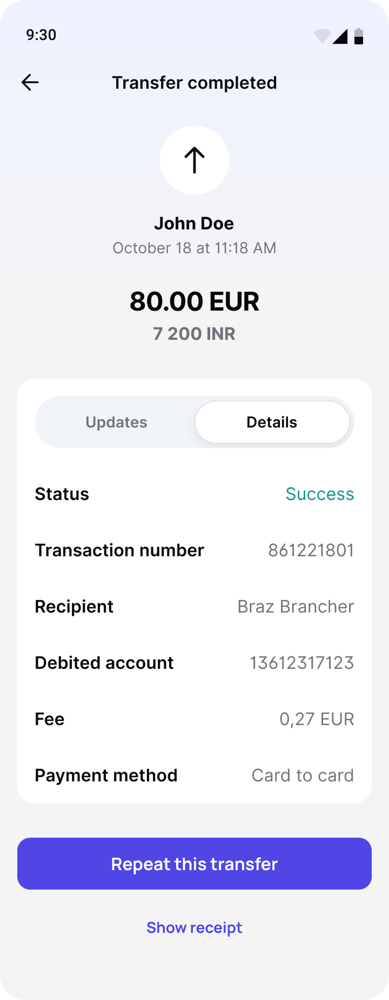
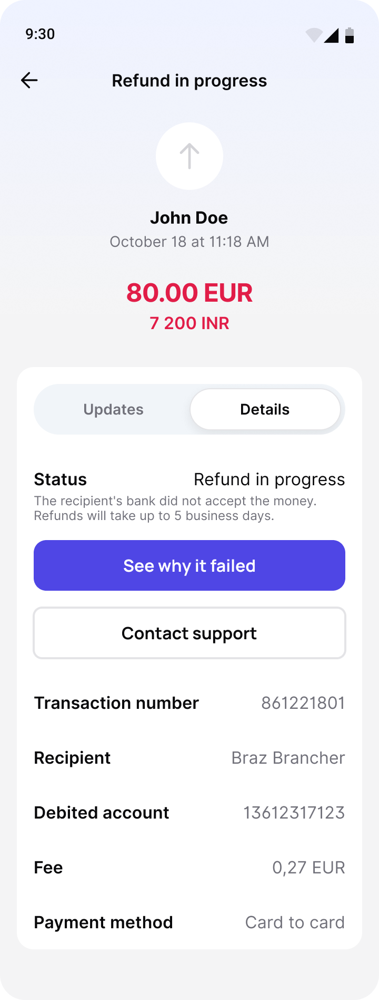
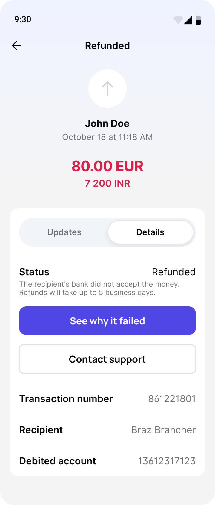

Transfer completed
Перевод завершён
Status: Success (green). CTAs: "Repeat this transfer" and "Show receipt" – both available when the job is done
Статус «Выполнен» (зелёный). Кнопки «Повторить перевод» и «Показать квитанцию» – когда всё готово

Transfer in progress
Перевод в обработке
Status: In progress. Copy: "We'll notify you once it's complete." CTA: "See why the delay" only when there is a delay
Статус «В обработке». Текст: «Сообщим, когда перевод дойдёт». Кнопка «Почему задержка» – только если перевод задерживается

Transfer failed
Перевод не прошёл
Status: Failed (red). Clear explanation. CTAs: "See why it failed" + "Contact support" – escape hatches, not dead ends
Статус «Не выполнен» (красный). Понятное объяснение и кнопки «Почему не прошёл» и «Написать в поддержку» – выход есть всегда

Refund in progress
Возвращаем деньги
"The recipient's bank did not accept the money. Refunds will take up to 5 business days." Honest timeline
«Банк получателя не принял деньги. Вернём их в течение 5 рабочих дней». Честный срок

Refunded
Деньги вернулись
Status: Refunded. The failure story is complete – money is back, user can act again
Статус «Возвращён». История закончена: деньги на месте, можно пробовать снова